Why is buying and selling apples hard?
Non-linearity can arise when the relation between two aspects of a system does not does not scale 1: some real number. Take the example of buying apples. A grocer will charge you a price x for each apple. The amount you pay for apples is a calculation based on the number of apples you purchase, a decision, and the cost of one apple , a parameter. Generally a calculation is given by:
\[ \dot{\mathbf{v}} = f(\mathrm{P}, \mathbf{v}, \dot{\mathbf{v}}^{\prime}) \text{ } \dots fnc1 \]
\[ \mathbf{v}\text{- decision variable set} \]
\[ \dot{\mathbf{v}}\text{- calculated variable set} \]
\[ \mathrm{P}\text{- parameter set} \]
\[ f \text{- } n^{th} \text{ order calculation} \]
For buying apples from you local grocer. The calculation is given by multiplying the cost with the amount of apples purchased.
\[ \textbf{total cost} = \text{Cost of one apple} \cdot \textbf{\# of apples purchased} \text{ } \dots cns1 \]
total cost is a calculated variable that is a function of the # of apples purchased and the Cost of one apple. This scales linearly, which basically means that if we plot total cost vs. # of apples purchased. It will be a straight line, see fig (a).

- Single Price Scheme

- Discount for Wholesale Price Scheme
which can look something like:
Now say the grocer gives you a discounted price for purchasing a large quantity, what the grocer is offering is basically to reduce the cost of the apples as a function of # of apples purchased, see fig (b). Put mathematically:
\[ \mathbf{total \ cost} = \textbf{\# of apples}_{\leq 9} \cdot \text{Cost}_{\leq 9} + \textbf{\# of apples}_{> 9} \cdot \text{Cost}_{> 9} \text{ } \dots cns2 \]
Your bill now also depends on which bin your choice lands you in: (1) less than or equal to 9 apples, or (2) greater than 9. Also, notice that it makes sense to buy 10 apples for 30 bucks as buying 9 costs you 36. Fair to say that the grocer only allows whole apples to be bought, so the feasible region formed by the variable is:
\[ \mathbb{R}_{\geq 1} \]
Additional constraints are needed x is a binary variable that, if 1, asserts that the decision is being taken in a particular bin; which in this case lets us know whether more than 9 apples were bought. cns3 and 4, provide a bound on the integer variables; cns5 ensures that you are either less than or equal to 9 or more than 9 apples… which makes it consistent with reality.
\[ \textbf{\# of apples}_{\leq 9} \leq 9 \cdot \mathbf{x}_{\# \leq 9} \text{ } \dots cns3 \]
\[ \textbf{\# of apples}_{> 9} \geq 9 \cdot \mathbf{x}_{\# > 9} \text{ } \dots cns4 \]
\[ \mathbf{x}_{\# \leq 9} + \mathbf{x}_{\# > 9} \leq 1 \text{ } \dots cns5 \]
The optimal solution of this simple optimization problem is to buy nothing at all, congrats! Problems require a ‘push’, a motive if I may. This could be driven by some percieved profit or a necessity such as meeting a demand for an essential product. Take for example
\[ \textbf{\# of apples} \geq 13 \text{ } \dots cns6 \]
Congrats again! you have no decision to make, or in scientific terms your problem has no degrees of freedom. You have one, 5 constraints (cns2-6) and 5 variables. This is to say that the feasible region is a point (# of apples = 13). What happens if you want to sell these? The business person in you may want to make a profit, which can even make the demand irrelevant. If you levy a price structure similar to the grocer, i.e. given a discount for large purchases. Your profit will be a function of how much the other person(s) purchases from you.
\[ \textbf{total profit} = \sum_{x \in People} \textbf{\# of apples}_{\text{you sold x}}\cdot \text{Selling Price} - \textbf{\# of apples}_{\text{grocer sold you}} \cdot \mathrm{Cost} \text{ } \dots cns7 \]
There is however a small problem, now you dont have control over how much you profit because you are subject to the whims of other people. However, you can try to predict how much your market compatriots may buy from you. You could, say, look at historic data and forecast demand.. but how sure can you be. The data could be skewed, prediction algorithms are imperfect, you being a human are capable of mistakes, and even if you do everything right the state of the system’s state may change. Say a disruption occurs when the apple seller’s association go on a strike resulting in a short supply. This had never happened before and you did not even have the chance to prepare for it. You could pass on the increased cost to your customer but they could choose to buy fewer apples. There are attempts at preparing for such things but you can never be too sure because you are solving for a future that by definition has not happened yet. And that is why buying and selling apples is hard!